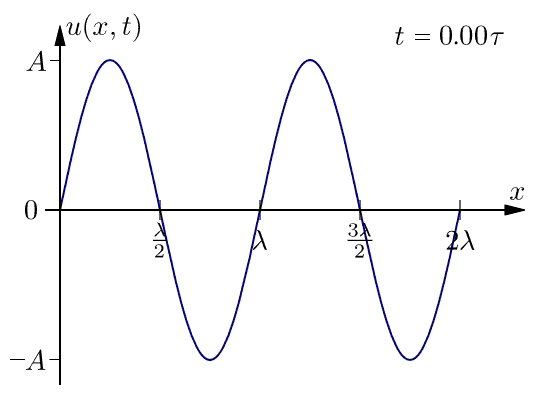

Problem 1
Interference Patterns on a Water Surface
When waves from different sources overlap on a water surface, they create interference patterns—regions where waves amplify (constructive interference) or cancel (destructive interference). This phenomenon, observable in ripples from multiple points, offers a visual gateway to understanding wave superposition. Exploring these patterns not only illuminates fundamental wave physics but also connects to real-world applications like acoustics, optics, and oceanography.
Simulation
Problem Statement
We’ll analyze interference patterns from coherent circular waves emitted by point sources at the vertices of a regular polygon (e.g., a square). The single disturbance equation for a wave from a point source at \((x_s, y_s)\) is:
where: - \(\eta\): Water surface displacement at \((x, y)\) and time \(t\), - \(A\): Amplitude, - \(k = \frac{2\pi}{\lambda}\): Wave number (\(\lambda\): wavelength), - \(\omega = 2\pi f\): Angular frequency (\(f\): frequency), - \(r = \sqrt{(x - x_s)^2 + (y - y_s)^2}\): Distance from source, - \(\phi\): Initial phase.
Total displacement is the sum over \(N\) sources:

Steps
1. Select a Regular Polygon
We’ll use a square (4 vertices) for simplicity and symmetry, centered at the origin with side length adjusted to fit the simulation domain.
2. Position the Sources
Place sources at the vertices of a square with side length \(2 \, \text{m}\):
- \((1, 1)\), \((1, -1)\), \((-1, -1)\), \((-1, 1)\).
3. Wave Equations
For each source at \((x_{s_i}, y_{s_i})\):
Assume \(A = 1 \, \text{m}\), \(\lambda = 0.5 \, \text{m}\), \(f = 2 \, \text{Hz}\), \(\phi_i = 0\) (coherent sources).
4. Superposition
5. Analyze Interference Patterns
- Constructive: Waves in phase (\(k r_i - \omega t\) differences are multiples of \(2\pi\)), amplifying displacement.
- Destructive: Waves out of phase (differences near \(\pi\)), canceling displacement.